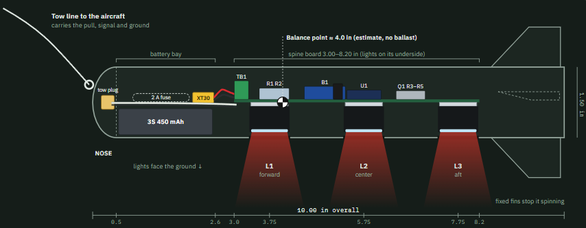
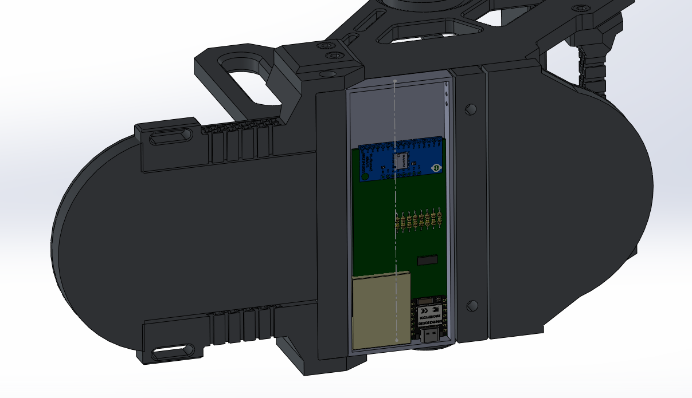
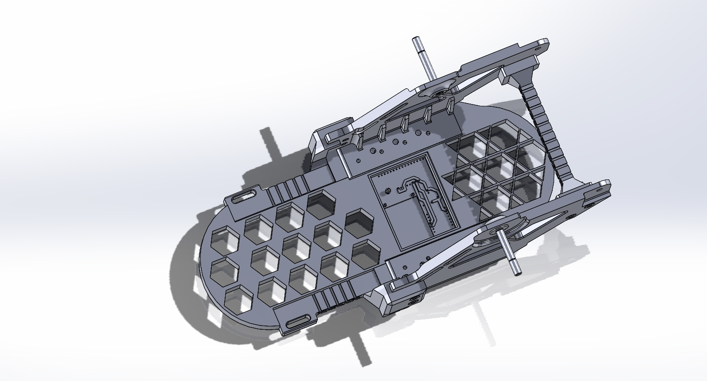
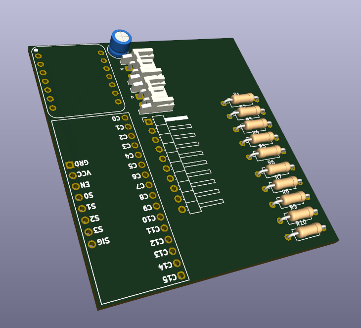
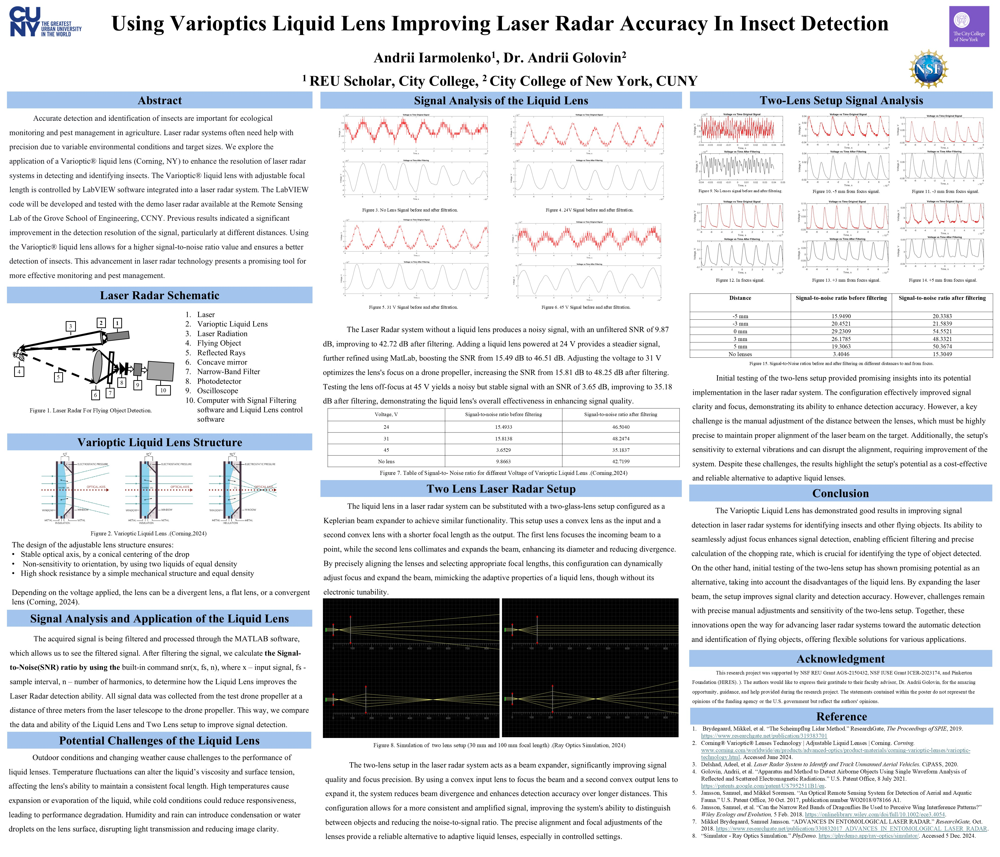
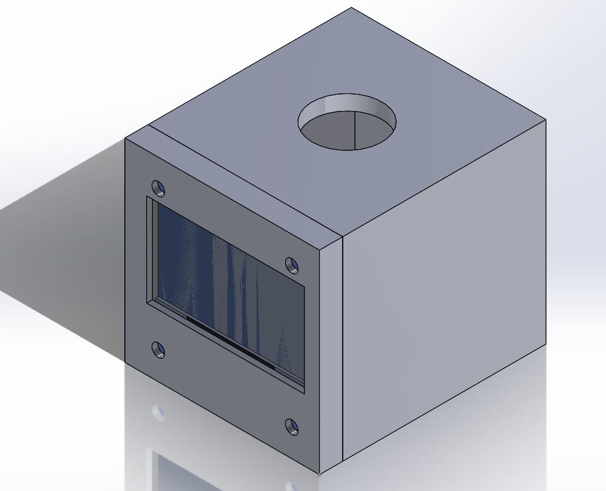

Research & Projects

AIAA Design-Build-Fly: Propulsion & Telemetry Pod
Built an instrumented motor dynamometer test bench using modular aluminum extrusions, a load cell, and an ESP32 to log thrust, RPM, current, and voltage across 0–100% throttle sweeps—improving static thrust by 18% while mitigating thermal throttling. Engineered a vibration-damped deployable sensor pod in SolidWorks and wired a central power distribution board controlled via RC telemetry.



Wearable Exoskeleton Sensor System
Designed a 16-channel multiplexed Force-Sensitive Resistor (FSR) array powered by an ESP32 at the BIOWEAR Lab to map plantar pressure for an assistive ankle exoskeleton. Integrated CD74HC4067 analog multiplexers, hardware pull-down networks, and digital filtering to capture stable gait force data at 100 Hz. Modeled and 3D-printed impact-resistant enclosures in SolidWorks and built a lossless Python serial data logger.

LiDAR Optical System Optimization
Improved LiDAR accuracy using Varioptic liquid lenses and a two-lens optical system through the NSF REU and MobilizeGreen programs. Simulated and optimized optical configurations using Zemax and MATLAB to reduce beam divergence, validated against benchtop ray-path measurements. Enhanced signal processing algorithms for detecting small, fast-moving targets and automated LabVIEW routines for real-time data collection.

Bicycle Frame FEA Analysis
Created detailed 3D model of a bicycle frame for Finite Element Analysis course. Performed structural analysis to evaluate stress distribution, deflection, and safety factors under various loading conditions. Optimized frame geometry for weight reduction while maintaining structural integrity.

ESP32 Desktop Clock
Developed a WiFi-connected clock system built around an ESP32-C3 microcontroller, featuring a 128×64 OLED display and piezo buzzer. Designed firmware in C++ handling NTP time synchronization, alarm scheduling, countdown timers, and real-time serial command parsing. Built a browser-based control interface served directly from the microcontroller using WebSocket communication for live clock updates, message display, and remote buzzer control. Modeled enclosure components in CAD optimized for compact electronics layout and OLED/buzzer accessibility.

3D Printed Workshop Solutions
Designed and fabricated custom workspace organizers using CAD and 3D printing. Created phone stands, laptop stands, and tool organizers optimized for ergonomics and efficient use of space. Each piece is iteratively refined based on daily use and practical feedback.
Conference Presentations
Emerging Researchers National Conference (ERN 2025)
Presented research on optimizing LiDAR optical precision using Varioptic liquid lenses in a dual-lens system, highlighting modeling, experimental validation, and data analysis.
Joint Mathematics Meeting (JMM 2024)
Presented research on using the Gini Coefficient to rank AI models, including methodology, statistical analysis, and interpretation of ranking metrics.